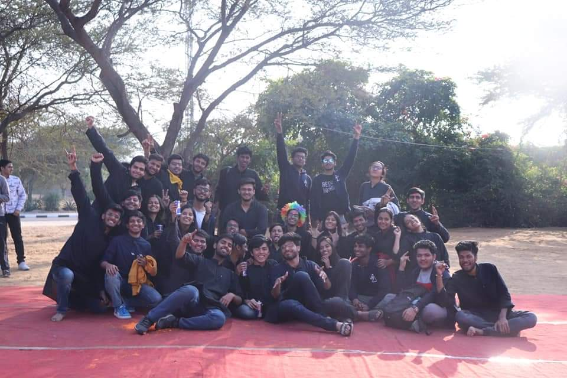

CV

My Academics graph in brief :
2016 - Class 10th - 9.8/10 CGPA
2018 - Class 12th - 71%
2019-23 - NSUT Delhi.
First year CGPA - 7.015/10
My Skills
Programming
Languages that I'm profficient in :
Python 3 
C++

C

HTML 5

CSS 3 
Besides learning computer languages, I'm also fluent in 3 different human languages :
English
Hindi
Maithili
About Me

Hello! I am Aashutosh Kumar, an engineering undergrad. I'm a sophomore currently studying Biotechnology Engineering under the Biological Sciences and Engineering (BSE) department of Netaji Subhas University of Technology(NSUT), New Delhi. I'm exploring new opportunities with each passing day, especially during this global pandemic, and this webpage is one such product of my new found interest in programming, and web development in particular.
Hobbies
These are some of the activities that I indulge in to relax, rejuvenate, and pretty much depend on to help me in regathering
my energy over the weekend :
Reading
Watching Cinema
Playing Video Games
Watching Sports
Writing
Activities
Here in I talk about 2 activities that I have indulged in and participated for quite some time, and describe my experiences there.
Table Tennis
Table Tennis, probably the second love of my life if we talk about sports. ( the first position is jointly shared by Cricket and WWE). I started learning to play Table Tennis purely out of boredom, when I was in school, at the age of 9. From then onwards, it was nothing but a joyride, though sometimes the love of the game was overpowered by the desire to always win, which is often accompanied by some levels of anxiety. But nonetheless, it was amazing to be able to play a sport, and represent my school Table Tennis Boys' team, which I later had the privilege of captaining. Between 2009 and 2016, I reprsented my school at various zonal, inter-zonal, all DAV sports meets, CBSE sports meets, and various other competitions, in different categories like sub-junior, junior, and then senior level.
Nukkad Naatak
A Nukkad Naatak or street theatre as it is often referred to, is a form of
theatre which is performed in open spaces, by performers all of whom wear identical costumes, generally a plain kurta, with minimal
usage of props and minimal financial investment. Since it is performed in open spaces, there are no tickets sold to watch these plays,
and the audience is whoever happens to be passing by. This makes it a very unique form of theatre, and a unique experience, for the
performers themselves, as well as the audience.
My first acting gig came when I was around 5 or 6 years old, though that was a one dialogue role, as you would expect from a bunch of
5-6 year olds, and it was a stage play, from what I can recall, as we were required to wear special costumes for it.
I performed in my first street play a few days before my 13th birthday, whem I was in 7th standard. It wasa play on water conservation,
and at this point of time, that is all I remember about it. It was a unique experience, enchanting, and I have been in awe of theatre
ever since. After that performance I became a part of my school's theatre team, and continued to be an active member and act in various
street plays from that point on till 2016. We regularly did street plays on various issues at different places like metro stations,
neighbouring colonies, and in inter school competitions.
Here I attach a video of one of my school theatre performances,
this particular play being on Swachh Bharat Abhiyaan, and was performed in October 2014 at the Jasola Vihar metro station.
In college, I joined the theatre society of my college, Ashwamedh, as a member of the Street theatre wing, and continue to work in the
capacity of an actor, and have had the privilege of performing in various colleges across the Delhi University.

An image of my college theatre group, Ashwamedh, after a winning performance at NIT Jaipur, in February 2019. If you are looking for me,
I am wearing the joker's wig, sitting just behind the front row. Pardon my enthusiasm.
These are some interesting articles to read up more on street theatre.
History of Street Theatre
in India
Impact of Street Theatre
in India